อบรมแล้วไม่ได้ใช้ต่อ
เนื้อหาดี คนชอบ แต่พอกลับไปทำงานจริงก็กลับไปทำแบบเดิม
Learning & Workshop Design Team
เราเชื่อว่าคนทำงานไม่ใช่แค่ฟันเฟืองขององค์กร แต่เป็นมนุษย์ที่มีทั้งศักยภาพที่รอการปลดล็อกและพร้อมเติบโตอย่างไม่หยุดยั้ง
The problem
เนื้อหาดี คนชอบ แต่พอกลับไปทำงานจริงก็กลับไปทำแบบเดิม
ใช้เวลาไปมาก แต่คนที่ควรพูดกลับเงียบ และงานไม่ขยับ
ทำงานหนักขึ้นทุกปี แต่ไม่มีภาพร่วมกันว่าทีมพัฒนาไปทางไหน
Core Service
ออกแบบและนำกระบวนการประชุมให้ถึงเป้าหมาย โดยทุกคนในห้องมีส่วนร่วมจริง
ออกแบบหลักสูตรและสื่อการเรียนรู้เฉพาะองค์กร เริ่มจากบริบทของคุณ ไม่ใช่ของสำเร็จรูป
จัดอบรมในองค์กรของคุณ ปรับเนื้อหาและกรณีศึกษาให้ตรงกับงานที่ทีมทำอยู่
หลักสูตรเปิดสำหรับบุคคลทั่วไป ได้เรียนและแลกเปลี่ยนกับคนต่างองค์กร
กิจกรรมที่ทำให้ทีมมองเห็นการเติบโตของตัวเอง และกลับไปทำงานด้วยกันได้ดีขึ้น
How we think
การเรียนรู้ไม่ได้มีรูปแบบเดียว เราหยิบชิ้นส่วนที่ทีมคุณมีอยู่ — คน ประสบการณ์ บริบท — มาประกอบใหม่ให้เหมาะกับโจทย์ตรงหน้า
How we work
เราออกแบบทุกกระบวนการผ่านห้าขั้นนี้ ตั้งแต่ทำความเข้าใจโจทย์จนถึงวัดผลสิ่งที่เปลี่ยนไปจริง แต่ละขั้นมีผลลัพธ์ที่ส่งมอบชัดเจน และลำดับปรับได้ตามบริบทของแต่ละองค์กร
Step one
วิเคราะห์ความต้องการ
Needs Analysis · Persona / Context
Step two
กำหนดวัตถุประสงค์
Learning Objectives · Success Criteria
Step three
ออกแบบประสบการณ์
Learning Journey · Activity Design
Step four
จัดกระบวนการ
Facilitation Plan · Materials & Tools
Step five
สะท้อนผล & วัดผล
Evaluation Report · Next Steps
Our work
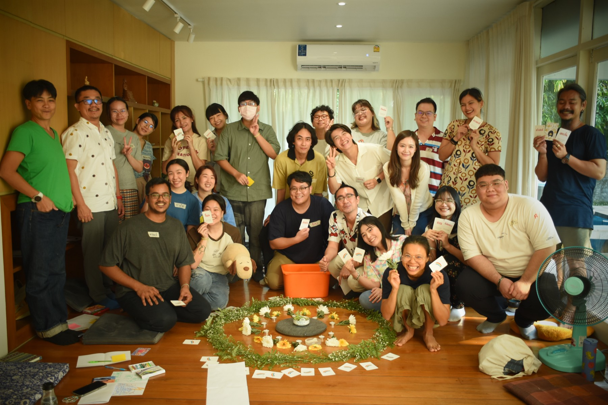
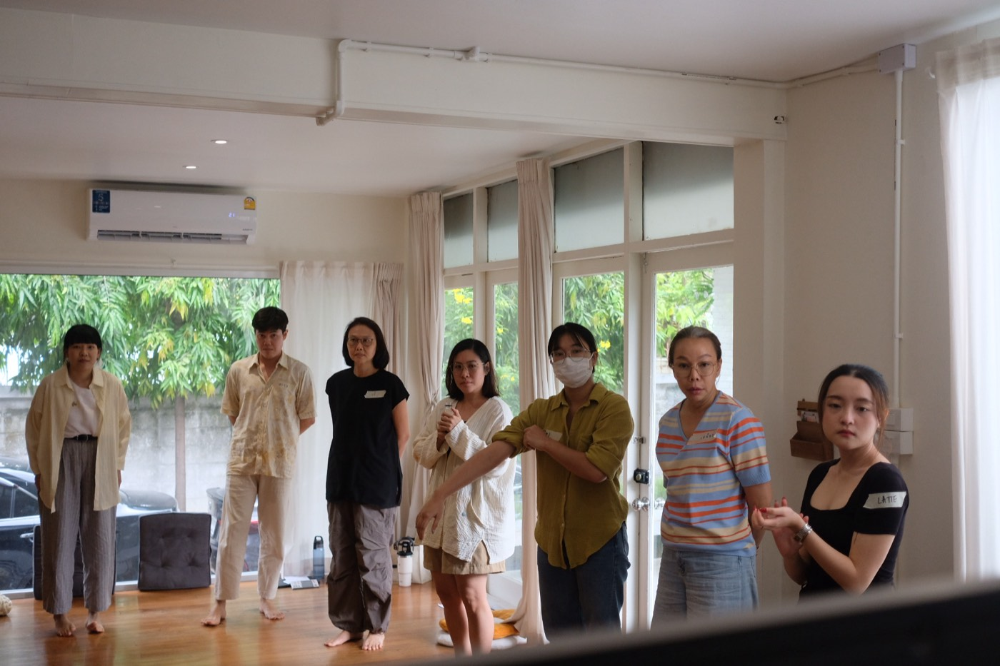
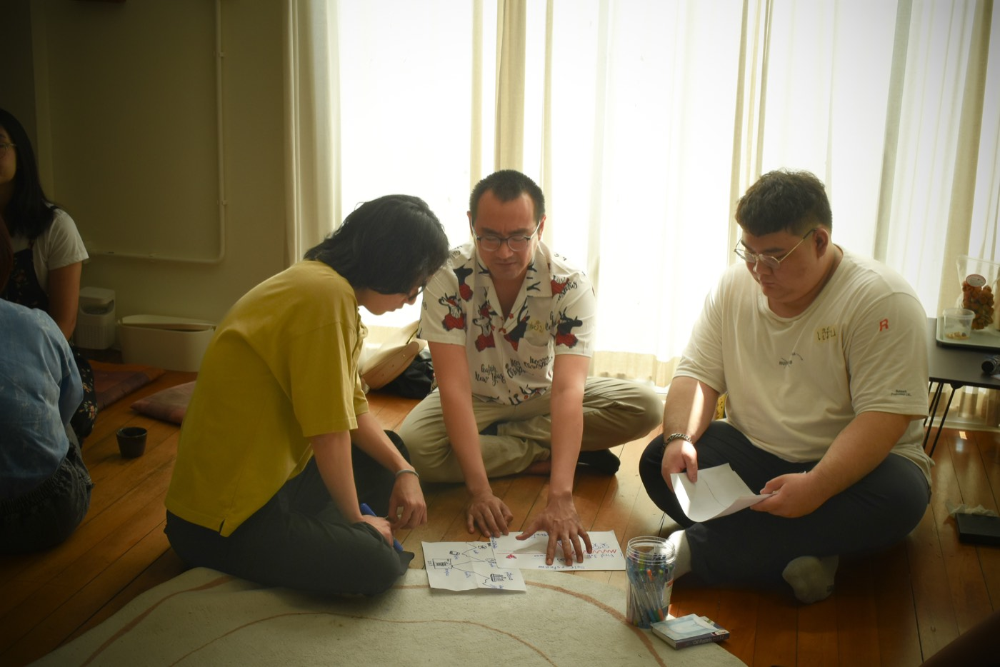
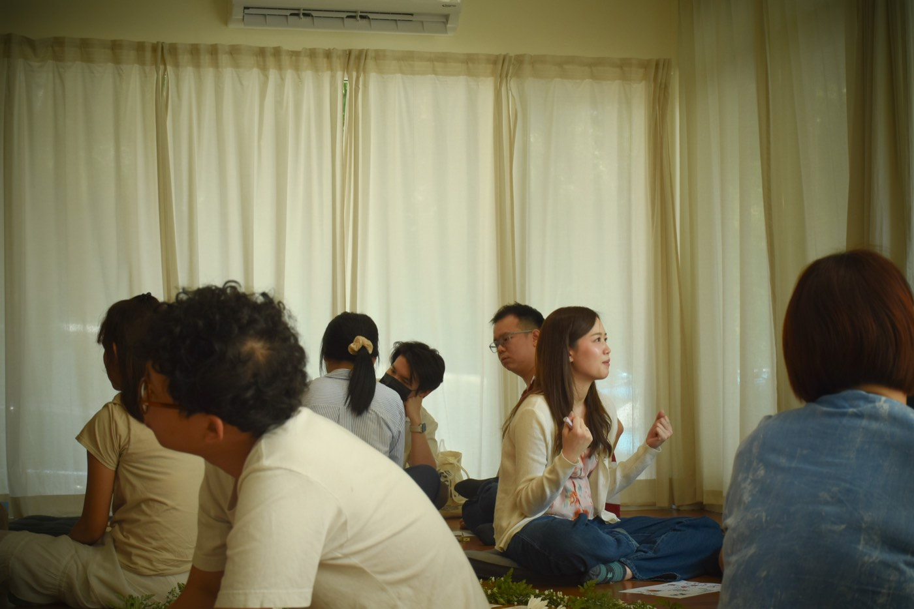
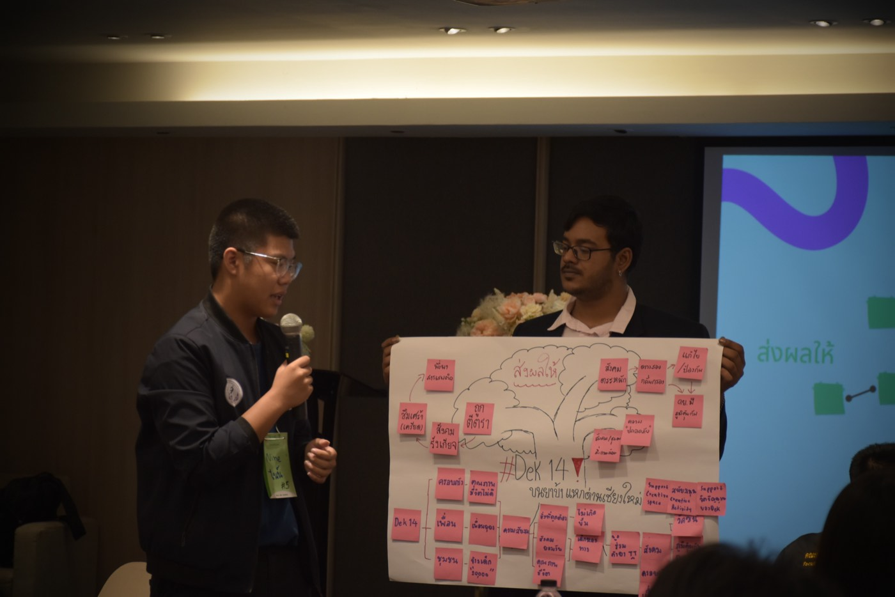
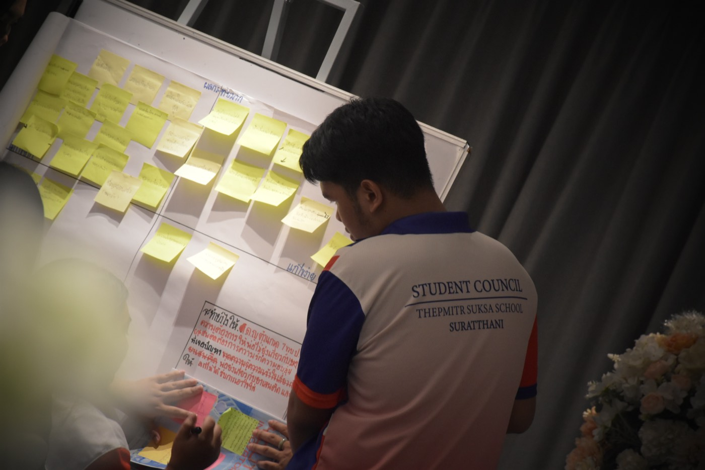
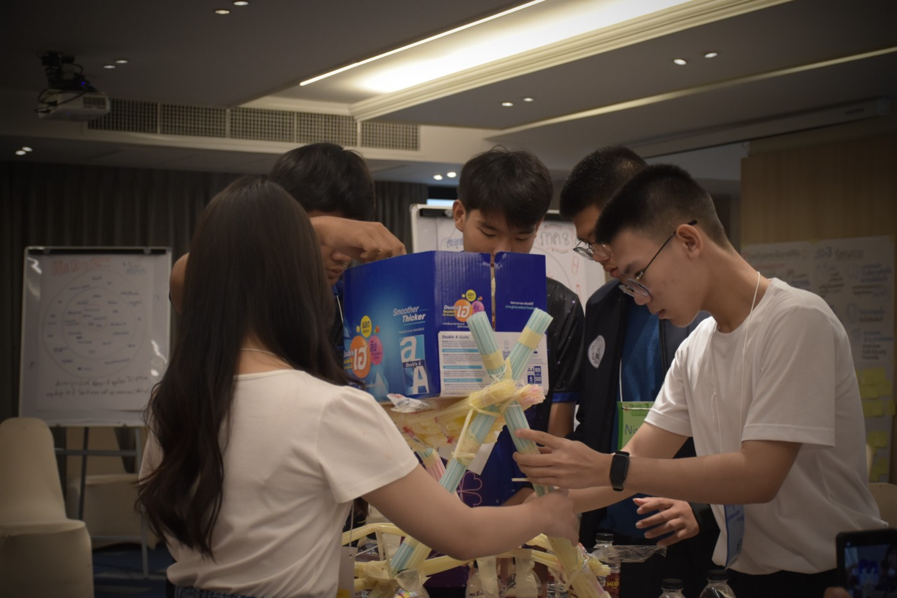
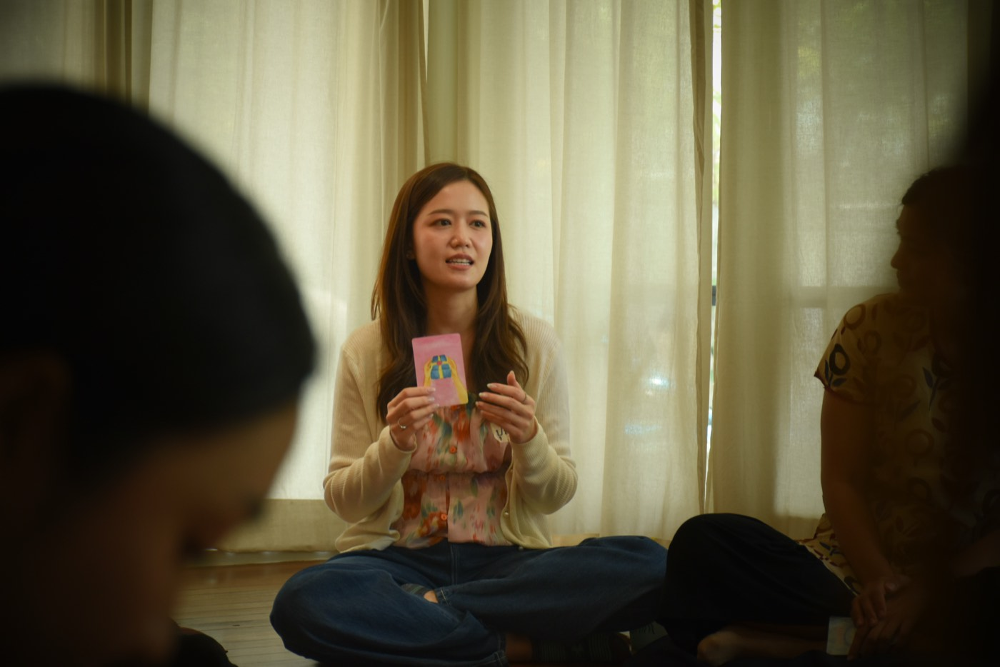
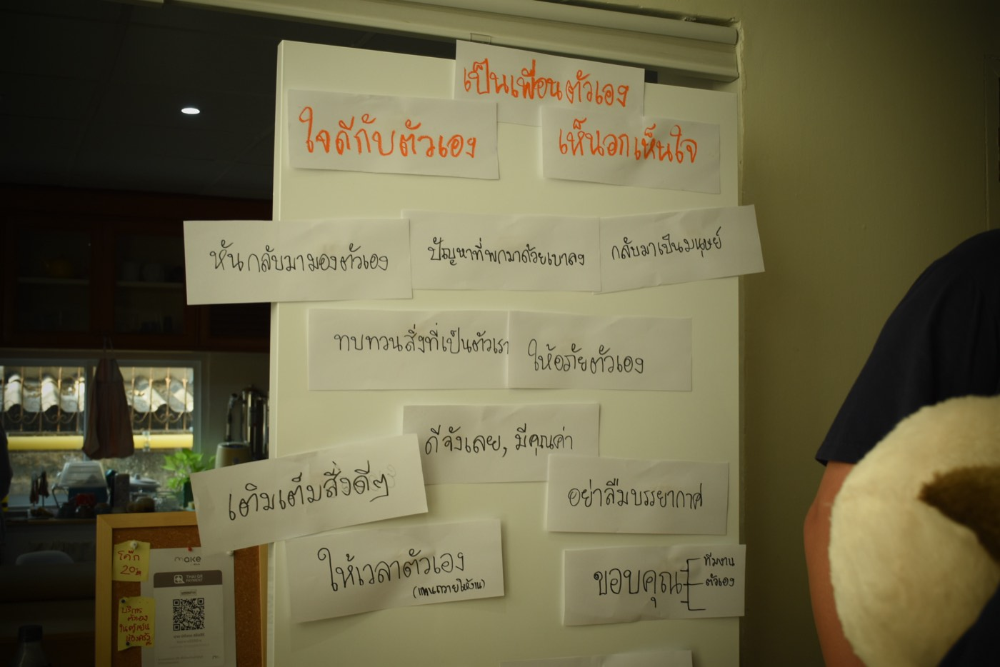
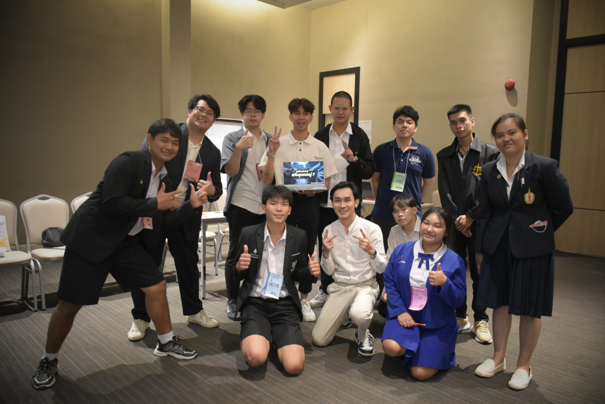
Clients
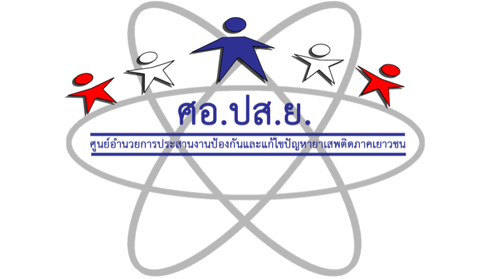
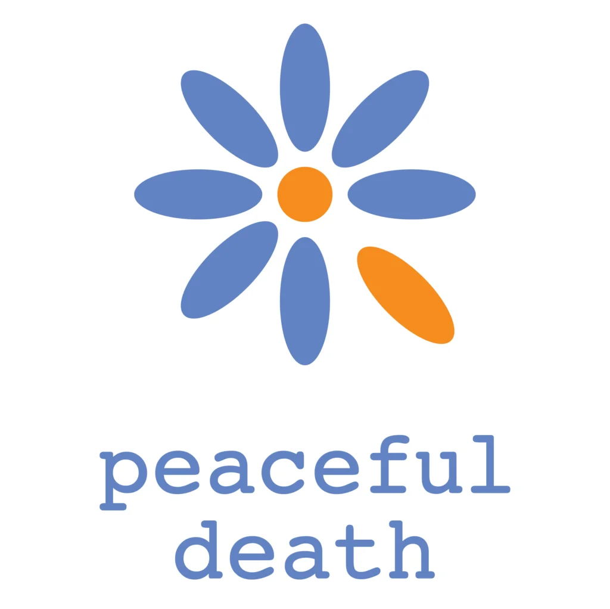
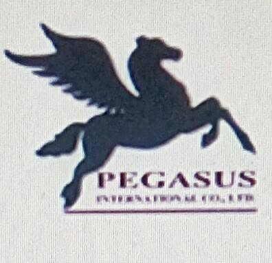
เริ่มจากการคุยกันสั้น ๆ เพื่อเข้าใจสถานการณ์ แล้วเราจะเสนอโครงกระบวนการให้